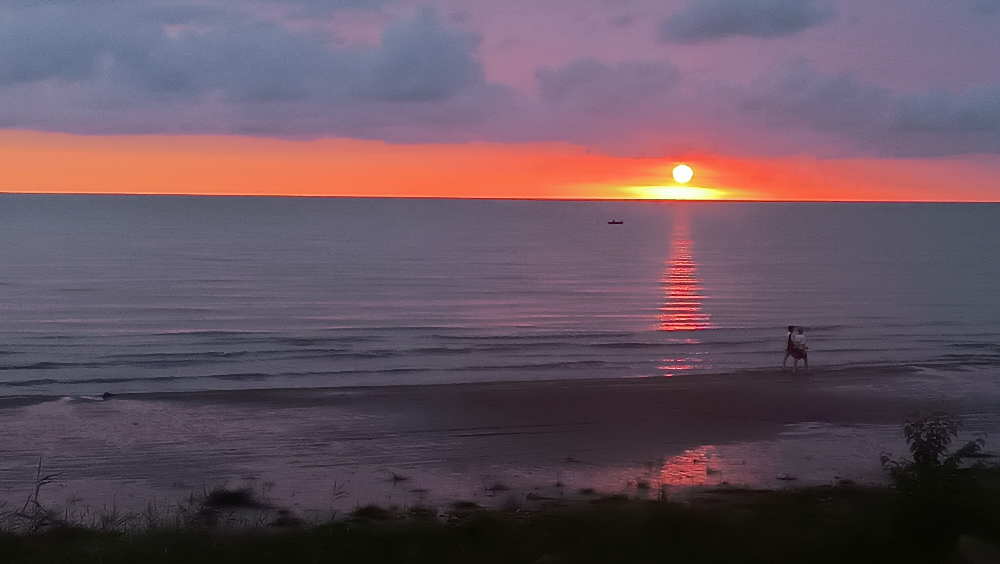

داستان شین
همه چیز از یک صبح کنار دریا شروع شد.
شین از یه ایده ساده شروع شد.
از وقتی یادم میاد، بعضی صبحها از خوابم میزدم و میرفتم کنار دریا تا طلوع رو تماشا کنم. اون ساعتها شاید تنها زمانی بود که میتونستم واقعاً برای خودم باشم؛ نه کسی بود که نگاهم کنه، نه صدایی بود که بخواد آرامشم رو به هم بزنه. فقط من بودم و دریا و صدای موجها.

شین از جایی شروع شد که دلم خواست بتونم همین حس رو برای آدمهای دیگه هم بسازم. یه جایی که بتونن برای چند ساعت از شلوغی و سروصدای روزمره فاصله بگیرن؛ یه جایی کنار دریا، با صدای موجها توی پسزمینه، یه نوشیدنی یا غذای خوب و چند ساعت آرامش.
برای من، شین فقط یه کافه نیست. شین همون حسیه که تونستم برای آدمهای دیگه بسازم؛ حسی که خودم توی تمام این سالها بهش احتیاج داشتم و باعث شد بتونم توی این دنیا دوام بیارم.
شاید شین فقط یه جای ساده برای قهوه خوردن باشه، ولی امیدوارم برای هر کسی که واردش میشه، چند ساعت از زندگی رو کمی آرامتر کنه.